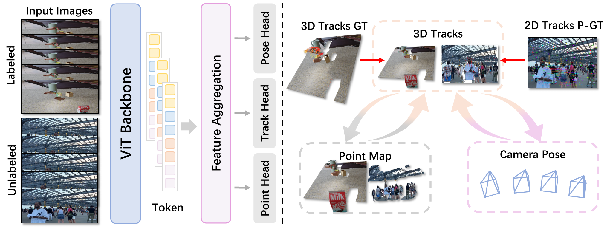

Abstract
Global-reference becomes ambiguous under multiple motions, while the local pointmap relies heavily on estimated relative poses and can drift, causing cross-frame misalignment and duplicated structures.
We propose TrajVG, a reconstruction framework that makes cross-frame 3D correspondence an explicit prediction by estimating camera-coordinate 3D trajectories.
We couple sparse trajectories, per-frame local point maps, and relative camera poses with geometric consistency objectives: (i) bidirectional trajectory–pointmap consistency with controlled gradient flow, and (ii) a pose consistency objective driven by static track anchors that suppresses gradients from dynamic regions.
To scale training to in-the-wild videos where 3D trajectory labels are scarce, we reformulate the same coupling constraints into self-supervised objectives using only pseudo 2D tracks, enabling unified training with mixed supervision. Extensive experiments across 3D tracking, pose estimation, point-map reconstruction, and video depth show that TrajVG surpasses the current feedforward performance baseline.
Pipeline

We jointly 3D track points with point-map and camera poses that tracking provides a direct improvement on both geometry reconstruction and camera motion.
Qualitative Comparison

Our method achieves better reconstruction results in field scenarios. In contrast, baseline methods suffer from issues such as overlap and loss of detail.